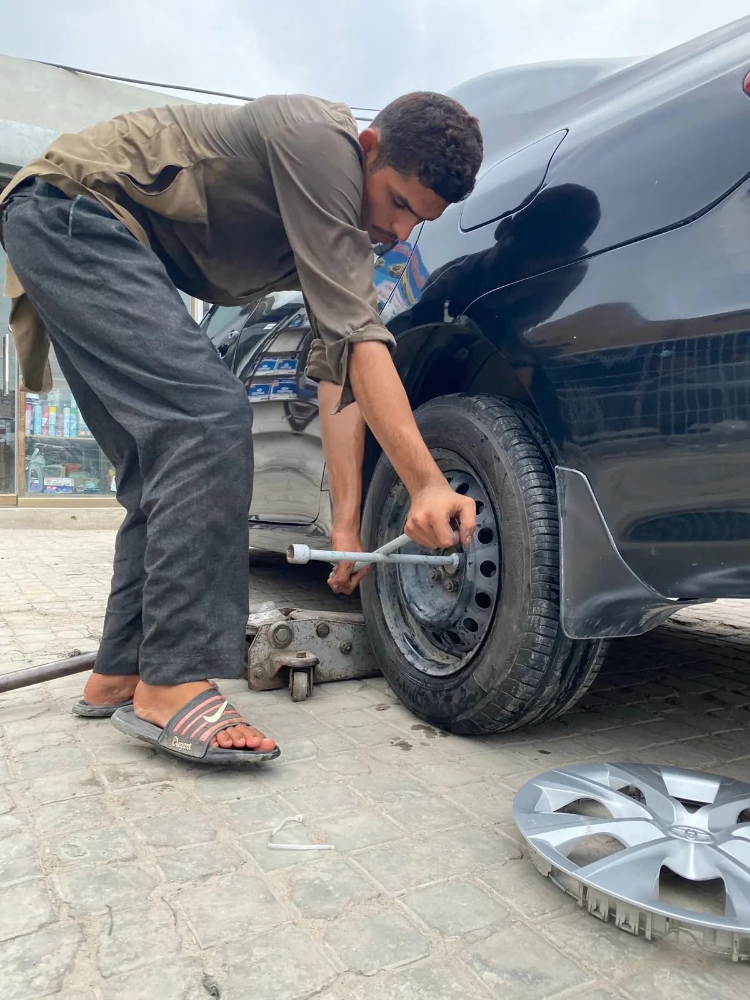

Mobile Mechanic
Skip the shop. Gerron comes to you for diagnostics, repairs and pre-purchase inspections.
- We come to you
- Since 2018
- Military discount
- Pre-purchase inspections
Auto repair services

Mobile Diagnostics
Check engine lights diagnosed where your car sits.
Learn more →
Pre-Purchase Inspections
Know what you're buying before you buy it.
Learn more →
Clutch Replacement
Clutch replacements and transmission work.
Learn more →
Brakes
Pads, rotors, lines and brake inspections.
Learn more →
Starters & Alternators
Batteries, starters, alternators and wiring.
Learn more →
Maintenance & Oil Changes
Oil changes, filters, fluids and scheduled service.
Learn more →What customers say
Gerron with Protech Mobile Mechanic is an absolute gem! Excellent communication, speedy, thorough, and trust worthy. Reasonable prices and he made everything smooth and easy, start to finish.
Gerron is the best. Handled everything and saved me twice or three times the amount I paid for a pre-purchase inspection by advocating for me with the dealer about issues he found.
Have had a clutch replacement and alternator replacement, he also did my back brakes with the clutch (he found a problem while doing a look over everything and communicated it, and I told him to go for it). Absolutely wonderful, solid pricing, great communication.
Quick response time, great service. I tried for a local mechanic and even called a buddy who used to be a mobile mechanic but neither of them helped me out.
Gerron is AMAZING!! He came out right away to help me work on a 1970 Mercury Cougar and exceeded expectations!
He could have tried to get me for more money and more work, but only charged a few bucks more for the work he put in. For that, I trust him & will use him again - but hopefully not ;)

Meet Gerron
Protech Mobile Mechanic has been bringing the shop to customers since 2018. Gerron comes to your home, work or wherever your car is stuck, so you don't have to tow it or wait days for a shop.
He looks over everything while he's there, tells you what he finds, and lets you decide. Military discount available.
What's going on with your car?
Tell us what your vehicle is doing and where it is, and Gerron will get back to you. Or call (503) 380-5413 (Mon–Sat: 10am–6pm).